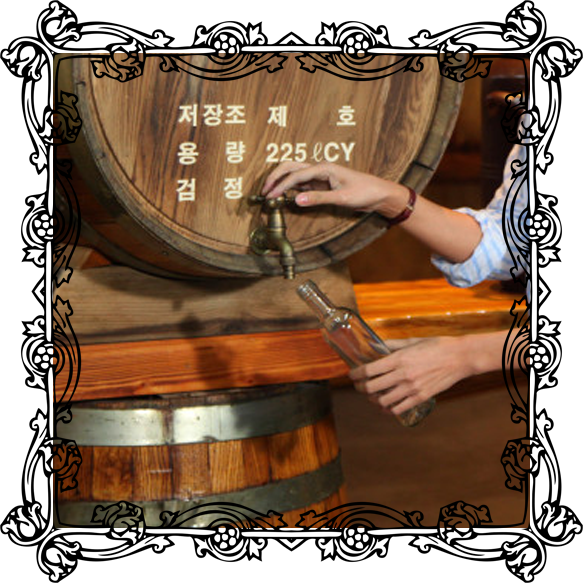
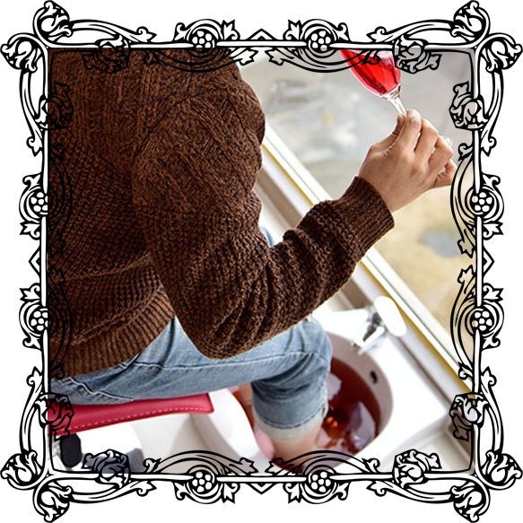

Program


나만의 와인만들기
포도밭에서 직접 수확한 포도를
이용하여 와인을 만들어보고
3년이상 오크통에서 숙성된 와인을 담아
라벨에 원하는 메세지를 적은
나만의 와인을 만들 수 있는 체험
최소인원 : 2명 → 1회
최대 80명 투어가능
체험시간 : 오후 14시 ~ 오후 16시
* 단체 15인 이상인 경우
시간 별도 조정 가능
* 체험진행시간 : 주말, 주중
예약 가능
24,000원

와인족욕 / 와인시음
은가비농장에서 직접 만든 와인을 시음하면서
와인족욕을 할 수 있는 체험
사랑하는 연인, 가족, 친구와
여유있는 힐링할 수 있는 족욕장!
(와인시음이 포함된 가격입니다)
최소인원 : 1명 → 1회
최대 15명 이용가능
체험시간 : 60분
* 단체 15인 이상인 경우
시간 별도 조정 가능
* 체험진행시간 : 주말, 주중
예약 가능
10,000원